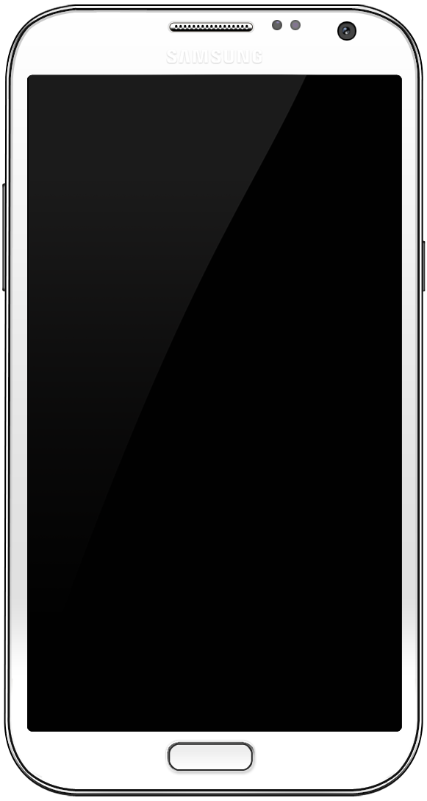

Samsung Galaxy Note II LTE (samsung-t0lte)
|
 Galaxy Note II | |
| Manufacturer | Samsung |
|---|---|
| Name | Galaxy Note II LTE |
| Codename | samsung-t0lte |
| Released | 2012 |
| Category | testing |
| Original software | Android |
| Original version | 4.1.1 on Linux 3.0.31 |
| postmarketOS kernel | 5.18.0 |
| Hardware | |
| Chipset | Samsung Exynos 4412 Quad |
| CPU | Quad-core 1.6 GHz Cortex-A9 |
| GPU | Mali-400 MP4 |
| Display | 720x1280 AMOLED |
| Storage | 16/32/64 GB |
| Memory | 2 GB |
| Architecture | armv7 |
{kind=link}
| USB Networking |
Works
|
|---|---|
| Flashing |
Partial
|
| Touchscreen |
Works
|
| Display |
Works
|
| WiFi |
Works
|
| FDE |
Works
|
| Mainline |
Works
|
| Battery |
Works
|
| 3D Acceleration |
Works
|
| Audio |
Partial
|
| Bluetooth |
Partial
|
| Camera | |
| GPS | |
| Mobile data | |
| SMS | |
| Calls | |
| USB OTG | |
| NFC | |
| Accelerometer | |
|---|---|
| Magnetometer | |
| Ambient Light | |
| Proximity | |
| Hall Effect | |
| Barometer | |
| Power Sensor | |
| Camera Flash | |
|---|---|
| Keyboard | |
| Touchpad | |
| USB-A | |
| HDMI/DP | |
| Ir TX |
Unavailable
|
| Ir RX | |
| Stylus | |
| Haptics | |
| Ethernet | |
| FOSS bootloader | |
Contents
Contributors
- Jack_Kekzoz
Users owning this device
- BlackEyedSquid (Notes: Verizon model (t0ltevzw), locked bootloader (KitKat update))
- Jack Kekzoz
How to enter flash mode
When the phone is powered off, press and hold down the Home, Volume Down and Power buttons to turn it on in Download mode.
If you have installed a custom recovery, then when the phone is powered off, press and hold down the Home, Volume Up and Power buttons to turn it on in Recovery mode.
Installation
You can install postmarketOS either by flashing the rootfs to an sdcard, and then flashing the kernel using Heimdall when the phone is in Download mode, or you can install it via a recovery zip. It is not possible currently to flash rootfs in Download mode, as Heimdall has issues with flashing rootfs currently (see Heimdall). Please note that for the recovery installation, if you enable FDE, you need to ensure your custom recovery supports the cipher you are using.
Display
There is an issue with the display in that the brightness is too high when it turns on. Simply turning down the brightness, even a little, makes it jump to the correct setting.
FDE
FDE works, but for some reason, not with hardware acceleration.
Audio
Speaker and (main) mic work, but not headphone, as the kernel driver needs work to support that. In its current state the headphone audio is very crackly.
Bluetooth
Without the non-free firmware package, there may be some limited Bluetooth functionality [1]. If this occurs, it is probably because there is some code in the ROM of the BCM4334 chip. It is recommended to toggle Bluetooth off in this state, as the chip is designed to only work properly with the firmware patch, and unexpected issues may occur without it.
If you enable the non-free firmware package, then Bluetooth has partial functionality only:
- File sharing works (tested to and from a Motorola smartphone running stock Android 9)
- Keyboards work (though for some reason during pairing, the keyboard only became visible after it was paired with the smartphone.)
- Audio is NOT working properly, though that may be to do with a lack of configuration in Alsa UCM files.
- Internet sharing has not been tested.
In the long run, the Replicant project hopes to ask Cypress Semiconductor Corp. if they are willing to release the source code to the firmware under a permissive licence [2].
Touchkeys
The Back touchkey can be used for navigating back (mainly in Firefox, but also in other contexts). The Menu touchkey does nothing by default, but it can be assigned in the phosh settings.
If you wish, you can run this script in a terminal in the background to give you some haptic feedback and to illuminate the touchkey LEDs for 1 second when they are touched - you will need to install evtest beforehand though. It is a bit of a hack, so won't be bundled in postmarketOS by default:
#!/bin/sh
device='/dev/input/by-path/platform-i2c-gpio-4-event'
event_back='*code 158 (KEY_BACK), value 1*'
event_menu='*code 139 (KEY_MENU), value 1*'
evtest "$device" | while read line; do
case $line in
($event_back) fbcli -E button-pressed
echo 1 > /sys/class/leds/tm2-touchkey/brightness
sleep 1
echo 0 > /sys/class/leds/tm2-touchkey/brightness ;;
($event_menu) fbcli -E button-pressed
echo 1 > /sys/class/leds/tm2-touchkey/brightness
sleep 1
echo 0 > /sys/class/leds/tm2-touchkey/brightness ;;
esac
done
Hardware
| Part | Name | Mainline kernel support | Notes |
|---|---|---|---|
| GPU | Mali-400 MP4 | Y | Driver |
| Panel | Samsung S6EVR02 LCD panel | N | But there is a patch in pmaports |
| Touchscreen | MMS152 | Y | Driver |
| WiFi | BCM4334 | Y | brcmfmac driver. Requires nonfree firmwares. |
| Bluetooth | BCM4334 | Y | Driver. Requires nonfree firmware. |
| GPS | MDM9615 | ||
| Modem | MDM9615 | P | DTSI. This modem is also found in samsung-m3 (GT-i9305). |
| Fuel gauge | MAX17047 | Y | Driver |
| MFD | MAX77686 | Y | Driver |
| Audio codec | WM1811 | Y | Midas-specific driver. This driver is thought to be an upstreamed version of samsung-m0's downstream driver. t0 driver needs upstreaming for full audio functionality. Main driver |
| Front Camera | S5K6A3 | Y | Image sensor driver, Imaging subsystem driver. For some reason cameras don't work yet - needs investigating |
| Back Camera | S5C73M3 | Y | Driver, SPI driver. For some reason cameras don't work yet - needs investigating |
| Flash LED & Vibrator (MFD) | MAX77693 | Y | Driver Device tree binding |
| Notification LED | AN30259A | Y | Driver Device tree binding |
| Accelerometer/Gyroscope | LSM330DLC | Y | Accelerometer driver, Gyroscope driver, Device tree binding. |
| Touchkey | Cypress ??? | Y | Driver |
| Magnetometer | AK8963C | Y | Driver, Device tree binding |
| Proximity/Light sensor | CM36651 | Y | Driver, Device tree binding |
| MHL | SII9244BO | Y? | This driver might work with samsung-m0 but not t0, or for both m0 and t0. Device tree binding |
| Sensor Hub | Samsung Sensor Hub | Y | Drivers, Device tree binding. This is required to get many sensors working. |
| Pressure Sensor | BMP182 | Y? | As reported by sensor-readout (f-droid) under android.
BMP180 (CONFIG_BMP280) Drivers, Device tree binding |
Partitions
Output of sudo parted /dev/mmcblk2 print:
Model: MMC MAG4FB (sd/mmc) Disk /dev/mmcblk2: 15.8GB Sector size (logical/physical): 512B/512B Partition Table: gpt Disk Flags:
| Number | Start | End | Size | File system | Name | Flags |
|---|---|---|---|---|---|---|
| 1 | 4194kB | 8389kB | 4194kB | BOTA0 | msftdata | |
| 2 | 8389kB | 12.6MB | 4194kB | BOTA1 | msftdata | |
| 3 | 12.6MB | 33.6MB | 21.0MB | ext4 | EFS | msftdata |
| 4 | 33.6MB | 37.7MB | 4194kB | m9kefs1 | msftdata | |
| 5 | 37.7MB | 41.9MB | 4194kB | m9kefs2 | msftdata | |
| 6 | 41.9MB | 46.1MB | 4194kB | m9kefs3 | msftdata | |
| 7 | 46.1MB | 54.5MB | 8389kB | PARAM | msftdata | |
| 8 | 54.5MB | 62.9MB | 8389kB | BOOT | msftdata | |
| 9 | 62.9MB | 71.3MB | 8389kB | RECOVERY | msftdata | |
| 10 | 71.3MB | 164MB | 92.3MB | fat16 | RADIO | msftdata |
| 11 | 164MB | 432MB | 268MB | ext4 | TOMBSTONES | msftdata |
| 12 | 432MB | 1866MB | 1434MB | ext4 | CACHE | msftdata |
| 13 | 1866MB | 4014MB | 2147MB | ext4 | SYSTEM | msftdata |
| 14 | 4014MB | 4601MB | 587MB | ext4 | HIDDEN | msftdata |
| 15 | 4601MB | 4610MB | 8389kB | OTA | msftdata | |
| 16 | 4610MB | 15.8GB | 11.1GB | ext4 | USERDATA | msftdata |
See also
- pmaports!2751 Preparatory merge request for LCD panel
- pmaports!2759 Initial device merge request
- pmaports!2913 Add partial audio support
- pmaports!2953 Add partial Bluetooth support
- pmaports!3012 Add camera flash/torch LED & notification LED support
- pmaports!3022 Add WiFi support
- pmaports!3062 Add vibration support
- pmaports!3192 Fix swapped touchkeys
- Device package
- Kernel package
- Firmware package (Common board firmware for Exynos Note 2 and S3 devices)
- FCC's t0lteatt and t0ltetmo Schematics